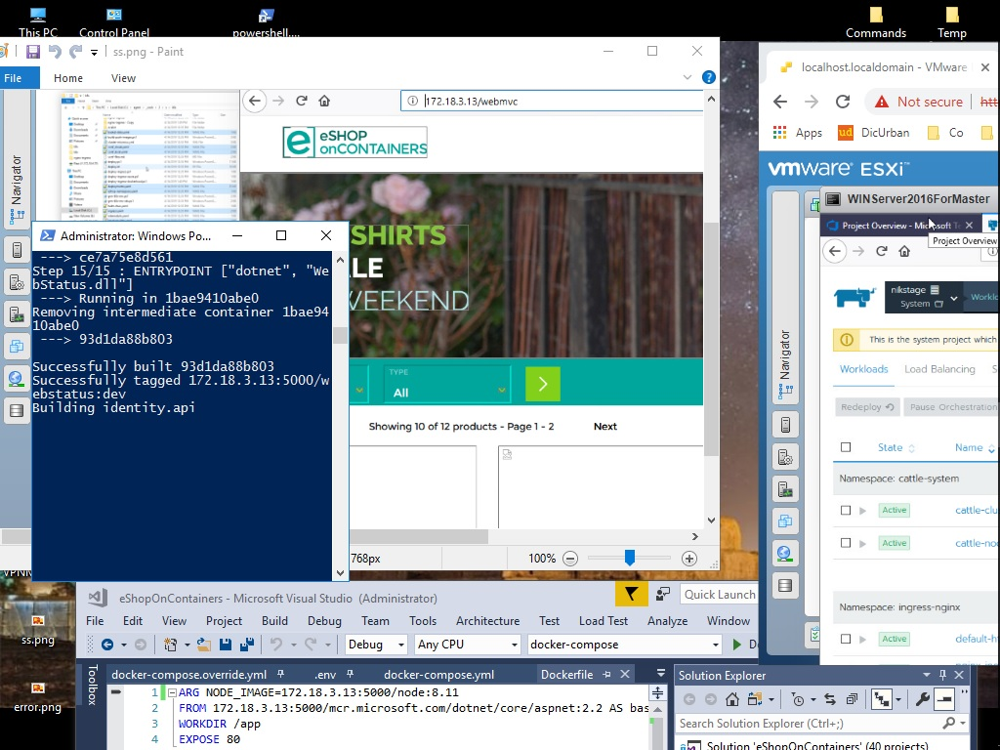

Rancher¶
One Platform for Kubernetes Management Rancher is a complete software stack for teams adopting containers. It addresses the operational and security challenges of managing multiple Kubernetes clusters, while providing DevOps teams with integrated tools for running containerized workloads. Rancher Kubernetes Engine (RKE) is a CNCF-certified #[[Kubernetes]] distribution that runs entirely within Docker containers. It works on bare-metal and virtualized servers. RKE solves the problem of installation complexity, a common issue in the Kubernetes community. With RKE, the installation and operation of Kubernetes is both simplified and easily automated, and it’s entirely independent of the operating system and platform you’re running. As long as you can run a supported version of Docker, you can deploy and run Kubernetes with RKE.Rancher has got [[CICD]] pipelines

Quote
Rancher is a CaaS platform and service provider that you can use it on cloud or #air-gap #high-avalibility. I deployed the Rancher via Helm and It was fascinated when I found kubernetes on rancher without trying to scratch. Rancher has got RKE-Cli like Google kubernetes and Amazon kubernetes.
Air-Gap configuration:
nodes:
- address: 172.18.3.10
internal_address: 192.168.11.1
user: ubuntu
role: [controlplane,worker,etcd]
- address: 172.18.3.15
internal_address: 192.168.22.2
user: ubuntu
role: [controlplane,worker,etcd]
- address: 172.18.3.16
internal_address: 192.168.33.3
user: ubuntu
role: [controlplane,worker,etcd]
services:
etcd:
snapshot: true
For Air-Gap HA you need to getting docker images(Version-2018):
busybox
minio/minio:RELEASE.2018-05-25T19-49-13Z
rancher/alertmanager-helper:v0.0.2
rancher/calico-cni:v3.1.1
rancher/calico-cni:v3.1.3
rancher/calico-ctl:v2.0.0
rancher/calico-node:v3.1.1
rancher/calico-node:v3.1.3
rancher/cluster-proportional-autoscaler-amd64:1.0.0
rancher/coreos-etcd:v3.1.12
rancher/coreos-etcd:v3.2.18
rancher/coreos-etcd:v3.2.24
rancher/coreos-flannel-cni:v0.2.0
rancher/coreos-flannel-cni:v0.3.0
rancher/coreos-flannel:v0.10.0
rancher/coreos-flannel:v0.9.1
rancher/docker-elasticsearch-kubernetes:5.6.2
rancher/fluentd-helper:v0.1.2
rancher/fluentd:v0.1.10
rancher/hyperkube:v1.10.12-rancher1
rancher/hyperkube:v1.11.6-rancher1
rancher/hyperkube:v1.12.4-rancher1
rancher/hyperkube:v1.9.7-rancher2
rancher/jenkins-jnlp-slave:3.10-1-alpine
rancher/jenkins-plugins-docker:17.12
rancher/k8s-dns-dnsmasq-nanny-amd64:1.14.10
rancher/k8s-dns-dnsmasq-nanny-amd64:1.14.13
rancher/k8s-dns-dnsmasq-nanny-amd64:1.14.7
rancher/k8s-dns-dnsmasq-nanny-amd64:1.14.8
rancher/k8s-dns-kube-dns-amd64:1.14.10
rancher/k8s-dns-kube-dns-amd64:1.14.13
rancher/k8s-dns-kube-dns-amd64:1.14.7
rancher/k8s-dns-kube-dns-amd64:1.14.8
rancher/k8s-dns-sidecar-amd64:1.14.10
rancher/k8s-dns-sidecar-amd64:1.14.13
rancher/k8s-dns-sidecar-amd64:1.14.7
rancher/k8s-dns-sidecar-amd64:1.14.8
rancher/kibana:5.6.4
rancher/log-aggregator:v0.1.3
rancher/metrics-server-amd64:v0.2.1
rancher/metrics-server-amd64:v0.3.1
rancher/nginx-ingress-controller:0.16.2-rancher1
rancher/nginx-ingress-controller-defaultbackend:1.4
rancher/pause-amd64:3.0
rancher/pause-amd64:3.1
rancher/pipeline-jenkins-server:v0.1.0
rancher/pipeline-tools:v0.1.0
rancher/prom-alertmanager:v0.15.2
rancher/rancher-agent:v2.1.5
rancher/rancher:v2.1.5
rancher/rke-tools:v0.1.13
rancher/rke-tools:v0.1.15
rancher/rke-tools:v0.1.16
rancher/coreos-etcd:v3.2.18
rancher/rke-tools:v0.1.15
rancher/k8s-dns-kube-dns-amd64:1.14.10
rancher/k8s-dns-dnsmasq-nanny-amd64:1.14.10
rancher/k8s-dns-sidecar-amd64:1.14.10
rancher/cluster-proportional-autoscaler-amd64:1.0.0
rancher/hyperkube:v1.11.6-rancher1
rancher/coreos-flannel:v0.10.0
rancher/coreos-flannel-cni:v0.3.0
rancher/calico-node:v3.1.3
rancher/calico-cni:v3.1.3
rancher/calico-ctl:v2.0.0
weaveworks/weave-kube:2.1.2
weaveworks/weave-npc:2.1.2
rancher/pause-amd64:3.1
rancher/nginx-ingress-controller:0.16.2-rancher1
rancher/nginx-ingress-controller-defaultbackend:1.4
rancher/metrics-server-amd64:v0.2.1
Info
